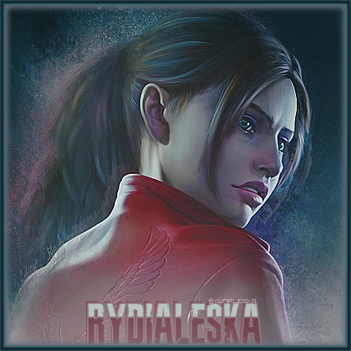

Rydialeska
Total jeux PS1
Total jeux PS2
Total jeux PS2
Total jeux GameCube
0%
0%
0%
0%
Terminés à 100% / Total
0%
Premier 100% : Resident Evil (PS1)
Dernier 100% : Resident Evil (PS1)
PS1
PS2
PSP
GC
•
Collection Playstation 1
Collection Playstation 2
Collection Playstation Portable
Collection Gamecube